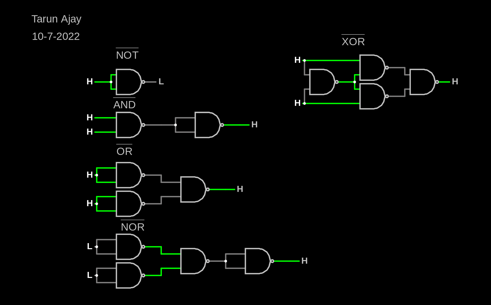
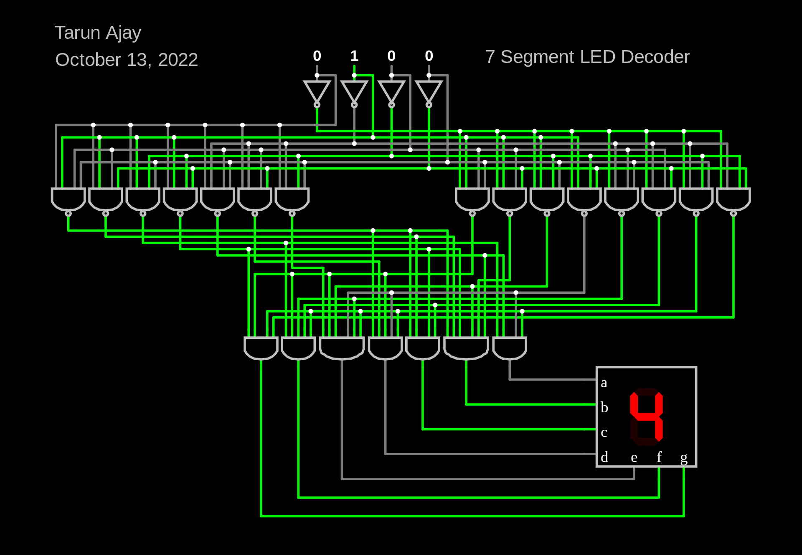

Back
Journal J1016
Name:Tarun Ajay
Date: 12-Sep-2022
I received assistance from: yahya Abu-Amara and Ameen Hasan
I assisted: No one


What did I learn? What is the "big idea"?
I learned how to make circuts and how it works
What challenges did I encounter?
The main challenge was how to put the circuit with the link in my journal
How could this experience be improved?
Nothing everything is fine
Free Reflection: How has what I've learned affected my thinking?
Circuits are easy to understand